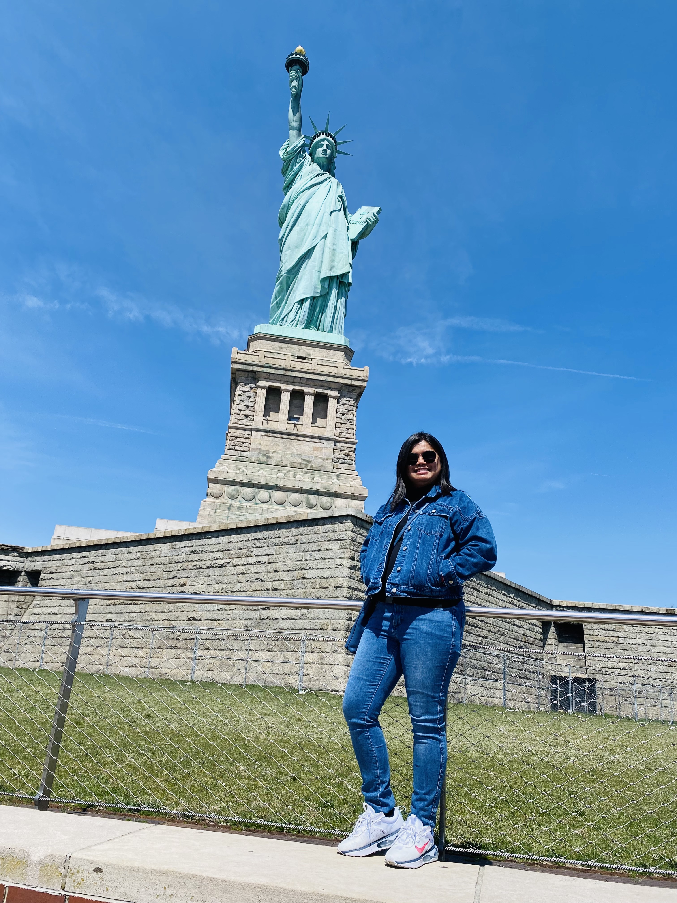

About Me
Gizelle Manilay
Mabuhay, everyone! ✋
My name is Gizelle. I'm a Filipina and I currently live in Utah(Utah Valley). I'm currently working on my degree in Applied Technology. I speak English, Tagalog, and Hiligaynon. Two things that I love the most are technology and history. I enjoy learning everything about computers and data science. I love visiting museums! I've been to some big museums in the United States. I recently visited the American Museum of Natural History in New York City. My loving husband and I got married last year, and it's been wonderful since day 1. 💗
I have a degree in Information Technology from the Philippines. I plan to continue my IT career in the United States but I want to focus in programming this time. I have created simple websites in the past using HTML and CSS but I still need to improve it. I think it's a very useful skill because a lot of things now are accessible through the internet. I want to continue to improve and earn more skills in computer and web development. I'm grateful that I have this opportunity to take online classes at BYU-Idaho.
I have been a member of the Church of Jesus Christ of Latter-Day Saints since birth. I'm in the third generation of Church members in the family. I served my mission in the Philippines Iloilo Mission. My favorite quote is from President Thomas S. Monson. He said, "Never let a problem to be solved become more important than a person to be loved."